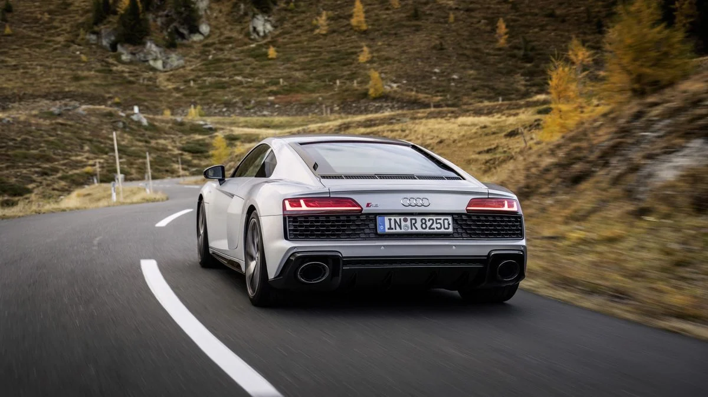
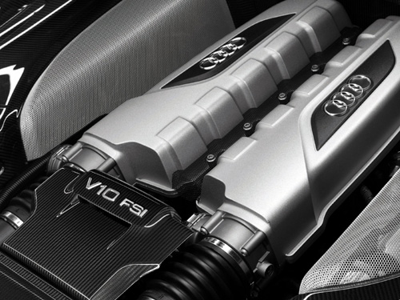
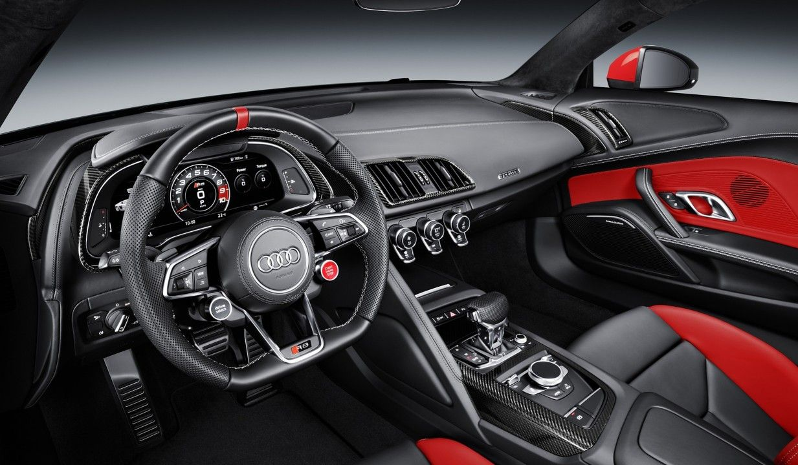

Une voiture unique
L'Audi R8 2022 incarne l'essence de la performance automobile alliée à un design saisissant. Cette supercar emblématique marie puissance, agilité et luxe, offrant une expérience de conduite inégalée sur route et sur piste.
L'esthétique de l'Audi R8 2022 est un mariage parfait entre élégance et sportivité. Des lignes dynamiques et sculptées soulignent sa silhouette audacieuse, tandis que des détails distinctifs tels que la calandre Singleframe hexagonale et les phares LED Matrix ajoutent une touche de sophistication moderne.

Sous le capot, l'Audi R8 est propulsée par un moteur V10 atmosphérique.
Délivrant une puissance impressionnante aux quatre roues grâce au système de transmission intégrale quattro. Cette combinaison offre des performances de pointe, avec des accélérations fulgurantes et une tenue de route exceptionnelle, faisant de chaque trajet une expérience électrisante.

À l'intérieur, l'Audi R8 offre un habitacle raffiné, mettant en avant des matériaux de haute qualité et un design ergonomique. Les sièges sport en cuir, le volant multifonction et les finitions haut de gamme créent un environnement de conduite luxueux et confortable.

Général
L'Audi R8 est une voiture de sport fabriquée par le constructeur automobile allemand Audi. Elle est célèbre pour son design élégant, ses performances impressionnantes et son moteur puissant.
Moteur
L'Audi R8 est équipée d'un moteur V10 atmosphérique qui délivre une puissance exceptionnelle. Ce moteur est disponible dans différentes versions, offrant des niveaux de performance variés pour répondre aux besoins des conducteurs passionnés de sport automobile.
Performance
Avec son moteur puissant et sa conception aérodynamique, l'Audi R8 offre des performances exceptionnelles sur route et sur piste. Elle peut accélérer de 0 à 100 km/h en seulement quelques secondes et atteindre des vitesses impressionnantes.
Intérieur
L'intérieur de l'Audi R8 est conçu pour offrir un confort maximal aux conducteurs et aux passagers. Les matériaux de haute qualité, les finitions luxueuses et les technologies avancées contribuent à créer une ambiance de conduite raffinée et sophistiquée.
Extérieur
L'Audi R8 présente un design extérieur distinctif et dynamique qui attire les regards partout où elle passe. Sa silhouette élancée, ses lignes élégantes et ses détails sportifs en font une voiture emblématique de la marque Audi.